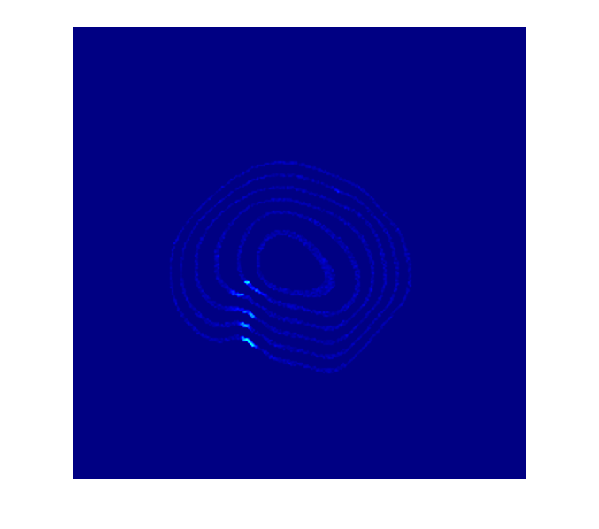
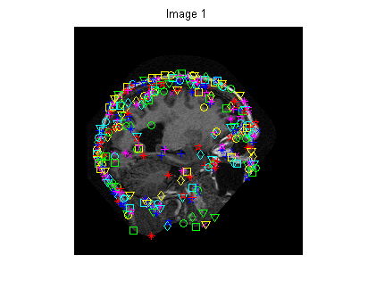
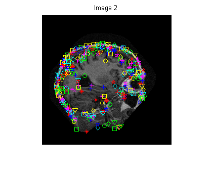
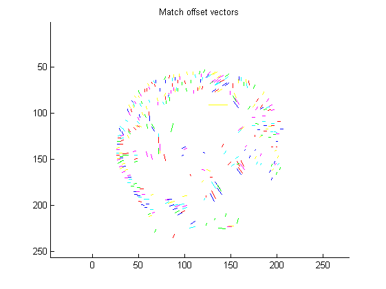
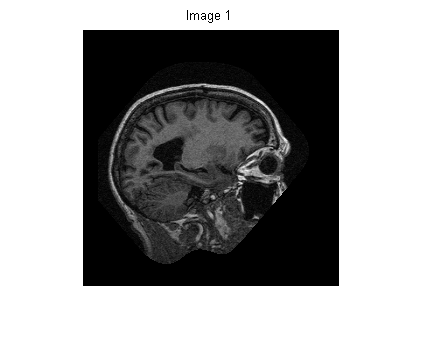
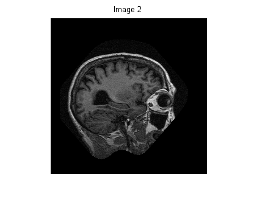
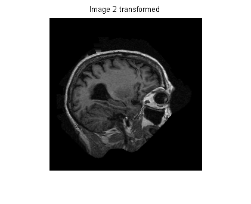
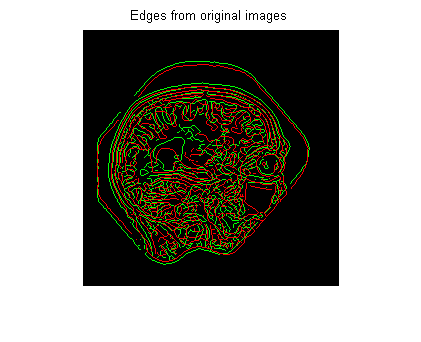
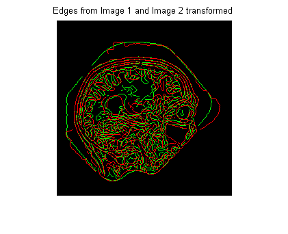

Demonstration of registration of MR images
David Young
Demonstrates registering two slices from an MR scan using a correlation matcher. Data are from the Oasis dataset. Any further use of the images which appear on the web version of this document, or which are made available via software at Sussex University, is covered by the data use agreement which can be found on the Oasis website.
Contents
Read in and display a set of MR images
Each image is a slice from the set making up the complete scan. We display them in sequence going through the head from side to side, with false colour to make the structures easier to see.
This assumes that the Sussex vision library is in your Matlab path.
nims = mr_image; for i = 1:nims imshow(imresize(mr_image(i),2)); colormap(jet); drawnow; end
Select 2 images for experimentation and display them
offset = 20; % the distance from the central plane sep = 5; % the separation between the two images l1 = floor(nims)/2 + offset; l2 = l1 + sep; im1 = mr_image(l1); im2 = mr_image(l2); figure; imshow(im1); figure; imshow(im2);
Find corresponding points in the two images
We use a normalised correlation matching method. See corrmatch (only available at Sussex) for details.
% Set the parameters for the matcher featurepatchsize = 5; % region size for computing local variance relthresh = 0.05; % relative threshold for detecting features searchpatchsize = 41; % the size of the patch used as a template xdispmin = -20; xdispmax = 20; % The maximum offset along each axis ydispmin = -20; ydispmax = 20; convtol = 0.1; % used in convolve2, q.v., to speed up convolution matchtol = 2; % the agreement required between forward and backward matches printprogress = 50; % how often to print progress report matches = corrmatch(... im1, im2, featurepatchsize, relthresh, ... searchpatchsize, xdispmin, xdispmax, ydispmin, ydispmax, ... convtol, matchtol, printprogress); [f1, f2, f3] = showmatches(im1, im2, matches);
Found 430 features in image 1 to match Starting matching Done 50 tests Done 100 tests Done 150 tests Done 200 tests Done 250 tests Done 300 tests Done 350 tests Done 400 tests No match found for 124 features, 306 consistent matches found  
Make a transformation
We can test whether the matching was good by seeing whether the vectors found will successfully warp one image so that it lies on top of the other.
We use the Matlab Image Processing Toolbox's transform functions to estimate a transform from our match points, and then the original two images are displayed, plus a warped version of image 2, which ought to be close in position to image 1. Since the offsets are small, it isn't easy to see if this is the case.
% Get the transform input_points = [matches(4,:); matches(3,:)]'; base_points = [matches(2,:); matches(1,:)]'; % Apply the transform to image 2 tform = cp2tform(input_points, base_points, 'piecewise linear'); transim = imtransform(im2, tform, 'Xdata', [1 size(im1,2)], 'Ydata', [1 size(im1,1)]); figure(f1); imshow(im1); title('Image 1'); figure(f2); imshow(im2); title('Image 2'); figure(f3); imshow(transim); title('Image 2 transformed');  
Check the transform
To make it easier to see whether the transform was accurate, we display the edges from the original two images superimposed, and the edges from the warped image 2 superimposed on image 1. We can see, particularly round the skull, that the transformation has shifted the edges into close correspondence.
e = superimpose_edges(im1, im2); figure(f1); imshow(e, []); colormap([0 0 0; 0 1 0; 1 0 0]); title('Edges from original images'); e = superimpose_edges(im1, transim); figure(f2); imshow(e, []); colormap([0 0 0; 0 1 0; 1 0 0]); title('Edges from Image 1 and Image 2 transformed'); 
Experimenting
You can download this document and then extract the original M-file with Matlab's grabcode function. You can then edit it for experimentation. (Functions from the Sussex vision library are only available to Sussex students and staff.)
Copyright University of Sussex, 2009.